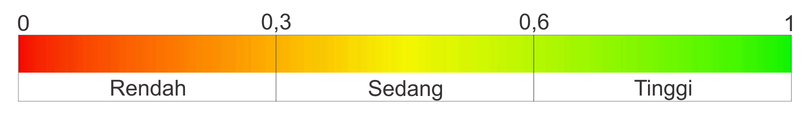

Web ini menyajikan hasil Kajian Risiko Bencana (KRB) Tanah Longsor di 56 desa di D.I.Yogyakarta pada kegiatan tahun 2016-2018.
Daftar 56 desa wilayah kajian sebagai berikut:
| No | Kabupaten | Kecamatan | Desa |
|---|---|---|---|
| 1 | Kulon Progo | Girimulyo | Jatimulyo |
| 2 | Kulon Progo | Girimulyo | Purwosari |
| 3 | Kulon Progo | Kalibawang | Banjarasri |
| 4 | Kulon Progo | Kokap | Hargowilis |
| 5 | Kulon Progo | Kokap | Kalirejo |
| No | Kabupaten | Kecamatan | Desa |
|---|---|---|---|
| 1 | Bantul | Piyungan | Srimulyo |
| 2 | Gunungkidul | Gedang Sari | Mertelu |
| 3 | Gunungkidul | Gedang Sari | Ngalang |
| 4 | Gunungkidul | Ngawen | Beji |
| 5 | Gunungkidul | Ngawen | Jurangjero |
| 6 | Gunungkidul | Patuk | Semoyo |
| 7 | Gunungkidul | Patuk | Putat |
| 8 | Kulon Progo | Girimulyo | Giripurwo |
| 9 | Kulon Progo | Girimulyo | Pendoworejo |
| 10 | Kulon Progo | Kalibawang | Banjararum |
| 11 | Kulon Progo | Kalibawang | Banjarharjo |
| 12 | Kulon Progo | Kalibawang | Banjaroyo |
| 13 | Kulon Progo | Samigaluh | Banjarsari |
| 14 | Kulon Progo | Samigaluh | Gerbosari |
| 15 | Kulon Progo | Samigaluh | Ngargosari |
| 16 | Kulon Progo | Samigaluh | Pagerharjo |
| 17 | Kulon Progo | Samigaluh | Purwoharjo |
| 18 | Kulon Progo | Samigaluh | Sidoharjo |
| No | Kabupaten | Kecamatan | Desa |
|---|---|---|---|
| 1 | Bantul | Banguntapan | Banguntapan |
| 2 | Bantul | Banguntapan | Tamanan |
| 3 | Bantul | Dlingo | Mangunan |
| 4 | Bantul | Dlingo | Terong |
| 5 | Bantul | Imogiri | Girirejo |
| 6 | Bantul | Imogiri | Karangtengah |
| 7 | Bantul | Imogiri | Selopamioro |
| 8 | Bantul | Imogiri | Sriharjo |
| 9 | Bantul | Kasihan | Ngestiharjo |
| 10 | Bantul | Kasihan | Tirtonirmala |
| 11 | Bantul | Kretek | Parangtritis |
| 12 | Bantul | Pleret | Bawuran |
| 13 | Bantul | Pundong | Seloharjo |
| 14 | Bantul | Sewon | Bangunharjo |
| 15 | Gunungkidul | Gedang Sari | Sampang |
| 16 | Gunungkidul | Gedang Sari | Serut |
| 17 | Gunungkidul | Gedang Sari | Tegalrejo |
| 18 | Gunungkidul | Gedang Sari | Watu gajah |
| 19 | Gunungkidul | Girisubo | Jeruk wudel |
| 20 | Gunungkidul | Ngawen | Sambirejo |
| 21 | Gunungkidul | Nglipar | Katongan |
| 22 | Gunungkidul | Nglipar | Kedungpoh |
| 23 | Gunungkidul | Nglipar | Pilangrejo |
| 24 | Gunungkidul | Patuk | Bunder |
| 25 | Gunungkidul | Patuk | Nglanggeran |
| 26 | Gunungkidul | Patuk | Nglegi |
| 27 | Gunungkidul | Semin | Kalitekuk |
| 28 | Gunungkidul | Semin | Karang sari |
| 29 | Kulon Progo | Kokap | Hargomulyo |
| 30 | Kulon Progo | Kokap | Hargorejo |
| 31 | Kulon Progo | Kokap | Hargotirto |
| 32 | Kulon Progo | Pengasih | Karangsari |
| 33 | Kulon Progo | Pengasih | Sidomulyo |
Sumber Data:
Hasil Kerjasama
| BPBD D.I.Yogyakarta | CV. Madani Callysta Saibuyun |
Indeks Bahaya
Indeks Kerentanan
Indeks Kapasitas

Indeks Risiko
Web ini adalah hosting sementara untuk testing saja.
Semoga nantinya dipindah ke alamat web resmi BPBD DIY.